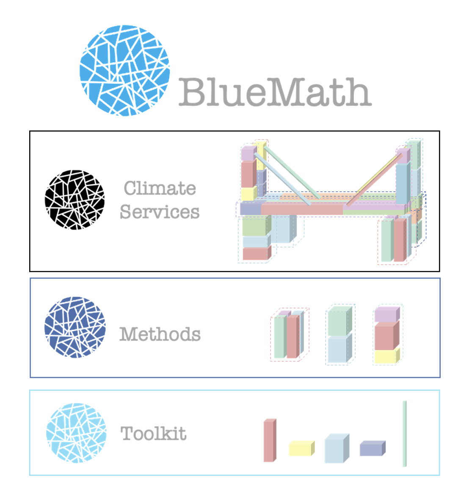

The Team
An interdisciplinary team combining ocean expertise, data science, and numerical modelling to understand and predict coastal processes — from local surf breaks to Pacific-wide flood forecasting.
The Ecosystem

BlueMath-tk) — data-mining/statistical models + numerical
model wrappers — Methods (hybrid/statistical/dynamical downscaling) —
Climate Services (hindcast, forecast, probabilistic assessment, climate change).
The Ecosystem · The Toolkit
downloaders
Copernicus ERA5 / CERRA, ECMWF Open Data, NOAA NDBC buoys, AVISO SWOT
tide · topo_bathy
Harmonic analysis (UTide, T_Tide), profiles, SWAN grids
Show code ↗datamining · predictor
LHS, MDA, PCA, K-means, SOM, XWT weather types
Pick the few cases worth simulating, or sort decades of weather into a handful of types
Show code ↗wrappers
SWAN, SWASH, XBeach, SFINCS, SCHISM, Delft3D
One API for every model: templates →
build_cases → run_cases → postprocess_cases, locally
or on HPC
interpolation · deeplearning
RBF, Gaussian processes, autoencoders, U-Net
waves · additive · tcs
BinWaves, spectra, ESTELA, GreenSurge, SHyTCWaves
Show code ↗distributions · teslakit
GEV, GPD, POT, non-stationary GEV, copulas, ALR weather-type simulation: the engine behind MUSCLE
risk
Damage curves and risk metrics
Show code ↗core (metrics, plotting, I/O, Dask) is shared by all of
thempip install bluemath-tk · conda install -c conda-forge
bluemath-tk
bold = used in today's workshop.
# Offshore forcing: ERA5 waves and winds over the area of interest from bluemath_tk.downloaders.copernicus.copernicus_downloader import CopernicusDownloader era5 = CopernicusDownloader(product="ERA5", base_path_to_download="data/", api_key=CDS_KEY) era5.download_data_era5( variables=["swh", "pp1d", "mwd", "u10", "v10"], years=years, months=months, area=[north, west, south, east], dry_run=False, ) # Validation: NDBC buoy records from bluemath_tk.downloaders.noaa.noaa_downloader import NOAADownloader ndbc = NOAADownloader(product="NDBC", base_path_to_download="data/") ndbc.download_data_ndbc(data_type="bulk_parameters", ..., dry_run=False) # Pseudocode: split a tide-gauge record into astronomical tide + residual tide = harmonic_fit(sea_level) # bluemath_tk.tide (UTide / T_Tide) residual = sea_level - tide.predict(time) # Pseudocode: bathymetry as cross-shore profiles or a SWAN grid grid = topo_bathy.swan_grid(bathymetry, ...)
from bluemath_tk.datamining import LHS, MDA, PCA, KMA # HYBRID: a few representative sea states to simulate cases = LHS(num_dimensions=4).generate( dimensions_names=["hs", "tp", "dir", "wl"], lower_bounds=lo, upper_bounds=hi, num_samples=5000, ) mda = MDA(num_centers=300) mda.fit(data=cases, directional_variables=["dir"]) to_simulate = mda.centroids # → card 3: run the model # STATISTICAL: daily weather types from sea-level-pressure fields pca = PCA(n_components=0.95) pcs = pca.fit_transform( data=slp, vars_to_stack=["slp", "slp_gradient"], coords_to_stack=["latitude", "longitude"], pca_dim_for_rows="time", ) kma = KMA(num_clusters=36) weather_types, _ = kma.fit_predict(data=pcs) # → card 5: ALR simulation # Or in one call: PCA + KMA on atmospheric fields from bluemath_tk.predictor.xwt import XWT xwt = XWT(steps={"pca": pca, "kma": kma}) xwt.fit(data=slp)
from bluemath_tk.wrappers.swan.swan_wrapper import SwanModelWrapper # also: SwashModelWrapper, XBeachModelWrapper, SfincsModelWrapper, # SchismModelWrapper, Delft3dModelWrapper, ... wrapper = SwanModelWrapper( templates_dir="templates/", # Jinja templates of the model input files metamodel_parameters=to_simulate, # one row per case (e.g. MDA centroids) fixed_parameters={"mesh": mesh_file}, # the same for every case output_dir="cases/", ) wrapper.build_cases() # one folder per case, inputs rendered wrapper.run_cases(launcher="serial", num_workers=10) # or run_cases_in_background(...) / run_cases_bulk(...) on an HPC cluster wrapper.monitor_cases() # which ran, which failed results = wrapper.postprocess_cases() # all cases → one xarray Dataset # Your own model? Subclass BaseModelWrapper and keep the same four calls. # That's exactly what this workshop does for SnapWave.
from bluemath_tk.interpolation.rbf import RBF from bluemath_tk.interpolation.gps import ExactGPInterpolation # Metamodel: offshore inputs → simulated nearshore outputs, trained on a few cases rbf = RBF() rbf.fit( subset_data=mda.centroids, # the simulated inputs target_data=results_df, # their model outputs subset_directional_variables=["dir"], ) nearshore = rbf.predict(dataset=hindcast) # decades of hourly data in seconds # Same interface, with uncertainty: swap in a Gaussian process gp = ExactGPInterpolation(epochs=200) gp.fit(subset_data=mda.centroids, target_data=results_df) # Or reconstruct by superposition, with no fitting at all (BinWaves) from bluemath_tk.waves.binwaves import reconstruct_spectra nearshore_spectra = reconstruct_spectra(offshore_spectra, kp_coefficients) # GreenSurge (storm surge) and SHyTCWaves (tropical-cyclone waves) follow the same idea
from bluemath_tk.distributions.gev import GEV from bluemath_tk.distributions.nonstat_gev import NonStatGEV from bluemath_tk.distributions.pot import pot from bluemath_tk.teslakit.alr import ALR_WRP from bluemath_tk.teslakit.statistical import CopulaSimulation # Extremes: stationary, or driven by seasonality / climate indices gev = GEV.fit(annual_maxima_hs) nsgev = NonStatGEV(xt=hs_maxima, t=time, covariates=climate_indices) nsgev.fit() peaks = pot(hs, threshold=u) # peaks over threshold → GPD # Pseudocode: a MUSCLE-style climate emulator alr = ALR_WRP(model_dir) # autoregressive logistic regression alr.SetFitData(n_types, weather_types, terms) # weather types from card 2 alr.FitModel() alr.Simulate(num_sims=100, time_sim=thousand_years) # synthetic weather chronologies # For each simulated weather type, sample its storms jointly with copulas storms = CopulaSimulation(U_data=[hs, tp, dir, surge], kernels=["GPareto", "KDE", "KDE", "KDE"], num_sim=n) # → thousands of years of plausible sea states → return periods, flooding, risk
The Ecosystem · Wrappers
PROJ 'Paradip' '{{ case_num }}' CGRID UNSTRUC CIRCLE {{ mdc }} ... BOUndspec SIDE {{ marker | default(1) }}
Any input file of any model. Text files are rendered with Jinja (variables, loops, defaults); binary files such as meshes are copied as they are.
Show code ↗Paradip_CASES/ ├─ dm105.0fp0.035/ INPUT fort.14 ├─ dm105.0fp0.038/ ... │ ... 1,260 cases └─ sbatch_example.sh
One case per row (one_by_one: LHS, MDA) or every combination
(all_combinations: BinWaves). You choose the folder names, and cases are built in
parallel.
serial swan_serial.exe mpi mpirun -np 2 swash_mpi.exe docker docker run ... geoocean/rocky8 slurm sbatch sbatch_example.sh
Executable, MPI, Docker container or a Slurm array on HPC. Run in parallel workers, or in a background thread while you keep working in the notebook.
Show code ↗wrapper.monitor_cases() # % done, read from each case's log ds = wrapper.postprocess_cases() # → one xarray.Dataset
Track progress, re-run only the cases that failed, then merge every output into a single dataset, optionally cleaning up the raw files.
Show code ↗BaseModelWrapper and write build_case + postprocess_case
# BinWaves/templates/INPUT (SWAN), rendered once per case PROJ 'Paradip' '{{ case_num }}' MODE STAT COORDINATES SPHERICAL CCM CGRID UNSTRUCtured CIRCLE {{ mdc }} {{ flow }} {{ fhigh }} READGRID UNSTRUCtured ADCIRC # fort.14: binary-safe copy BOUndspec SIDE {{ boundary_marker | default(1) }} CONstant FILE 'input_spectra.bnd' GEN3 KOMEN AGROW ... # HyWaves/templates-metamodel/snapwave.inp (SnapWave): Jinja loops and conditions gridfile = {{ gridfile }} map_file = {{ map_file }} map_dirspr = {{ map_dirspr }} 0 {% for g in range(ngoals) %} {{ 1 if g == goal-1 else 0 }}{% endfor %} # Every {{ key }} comes from one case context: # metamodel_parameters (changes per case) + fixed_parameters (the same for all) # + case_num, added automatically
# BinWaves/02_Propagation.ipynb swan_cases, fixed = generate_swan_cases_and_fixed_parameters( frequencies_array=freqs, directions_array=dirs, ) # {"dm": [...], "fp": [...]} wrapper = BinWavesUnstructuredWrapper( templates_dir="templates", # INPUT, fort.14, locations.loc metamodel_parameters=swan_cases, fixed_parameters=fixed, output_dir="Paradip_CASES", ) wrapper.build_cases( mode="all_combinations", # every dm × every fp → 1,260 cases cases_name_format=lambda ctx: f"dm{ctx.get('dm'):.1f}fp{ctx.get('fp'):.3f}", ) # HyWaves: one case per LHS row, grouped by goal wrapper.build_cases( cases_name_format=lambda ctx: f"{ctx.get('goal'):02}/{ctx.get('case_num'):04}", ) # mode="one_by_one" (default) # Rebuild just a few: wrapper.build_cases(cases_to_build=[3, 17, 42]) # Large batches: wrapper.build_cases(num_workers=16)
# Each wrapper ships named launchers; any other string is run as a shell command SwanModelWrapper.available_launchers = { "serial": "swan_serial.exe", "docker_serial": "docker run --rm -v .:/case_dir -w /case_dir geoocean/rocky8 swan_serial.exe", } SwashModelWrapper.available_launchers # + "mpi": "mpirun -np 2 swash_mpi.exe", "docker_mpi" SfincsModelWrapper.available_launchers # + "docker": "... deltares/sfincs-cpu", "cluster" # Laptop: 10 cases at a time, output and errors logged in each case folder wrapper.run_cases(launcher="serial", num_workers=10) # Same, but in a background thread: the notebook stays free wrapper.run_cases_in_background(launcher="docker_serial", num_workers=10) wrapper.get_thread_status() # Only the ones that failed wrapper.run_cases(launcher="serial", cases_to_run=[12, 874]) # HPC: build_cases already wrote sbatch_example.sh → one Slurm array job wrapper.run_cases_bulk(launcher="sbatch --array=1-1260 sbatch_example.sh")
# Progress of every case, read from its own log wrapper.monitor_cases(value_counts="percentage") # Every case → one xarray Dataset (optionally written to disk and cleaned up) ds = wrapper.postprocess_cases(write_output_nc=True, clean_after=False) # Adding a new model: two methods. This is how SnapWave was added for this workshop # (bluemath_tk/wrappers/snapwave/snapwave_wrapper.py) from bluemath_tk.wrappers._base_wrappers import BaseModelWrapper class SnapWaveModelWrapper(BaseModelWrapper): available_launchers = {"default": "snapwave"} def build_case(self, case_context, case_dir): # write the boundary files for this case (hs.txt, tp.txt, dir.txt, ...) ... def postprocess_case(self, case_num, case_dir, case_context): # read output_sites.nc → tidy xarray Dataset ... # Templates, naming, parallel building, launchers, background runs, Slurm, # monitoring and merging: all inherited, nothing else to write.
The Ecosystem · Wrappers, live
PROJ 'Paradip' '{{ case_num }}' CGRID ... {{ mdc }} {{ flow }}
dm36 directionsfp35 frequenciesmonitor_cases() 0%
<xarray.Dataset>
Dimensions:
case_num: 1260
node: 13225
Data variables:
Hsig (case_num, node)
Tm02 (case_num, node)
Dir (case_num, node)
+ Xp, Yp, Depth (node)
+ dm, fp, tp, hs (case_num)
HyGloW
The idea
training — expensive, done once sea state → SnapWave() → nearshore waves 500 runs per goal, then never again prediction — cheap, every hour, every site sea state → metamodel() → nearshore waves ~ 5 mins per site (depending on hardware) metamodel = sample (LHS + MDA [optional]) + compress (PCA) + learn (Gaussian Process)
The Pipeline
Draw the area of interest (BlueMath or QGIS) and place offshore goal points along the coast, each with the range of directions waves can arrive from.
Generate the unstructured SnapWave mesh over the bathymetry with bluemesh2d.
Generate N plausible sea states per goal (period, direction, spreading, water level) using Latin Hypercube Sampling (LHS) approach.
Run SnapWave once per sample over a real bathymetry mesh, giving the nearshore response at thousands of sites.
MDA [optional] picks the most informative runs, PCA compresses the response maps, and a Gaussian Process learns the mapping.
Feed in any offshore hindcast hour, whole spectra included. Wave height scales the response, so it never needs sampling.
The Sketch
The output
Before the results
Every training run uses Hs = 1 m, and the real wave height only rescales the result. That removes one sampling dimension, but 1 m waves rarely break, so depth-limited breaking in storms is missed.
Effect: storm waves overestimated right at the shoreline (5 m
contour).
Fix: sample Hs too, or apply a breaking limit.
Each goal's metamodel learns the whole response map at once: about 1,200 sites along three depth contours, compressed with PCA. Detail that matters at one single site can end up in the variance PCA throws away.
Effect: a general model, not tuned to any one location.
Fix: for a project, train on just the couple of sites of interest.
Validation computes one RMSE over every site and hour on a contour. That number cannot tell a contour that is mediocre everywhere from one that is near-perfect with a few bad spots.
Effect: it hides where the error sits, and how good the good
sites are.
Fix: look site by site.
Does it learn the physics?
One site, up close
Where it runs today
The portal · Inside a case
Being honest
Thank you